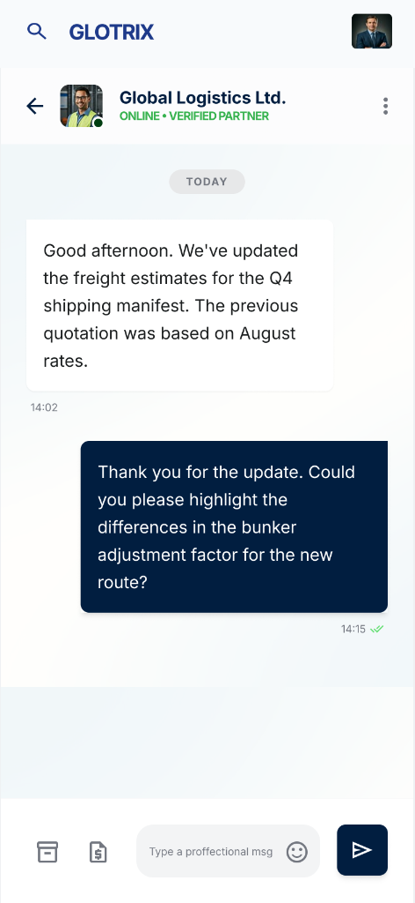
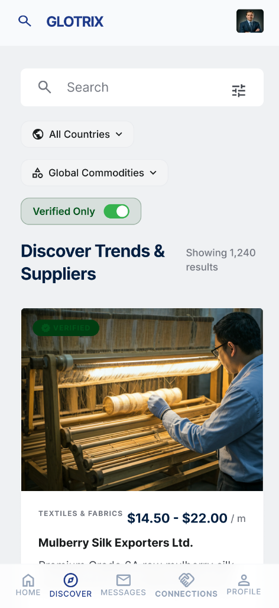
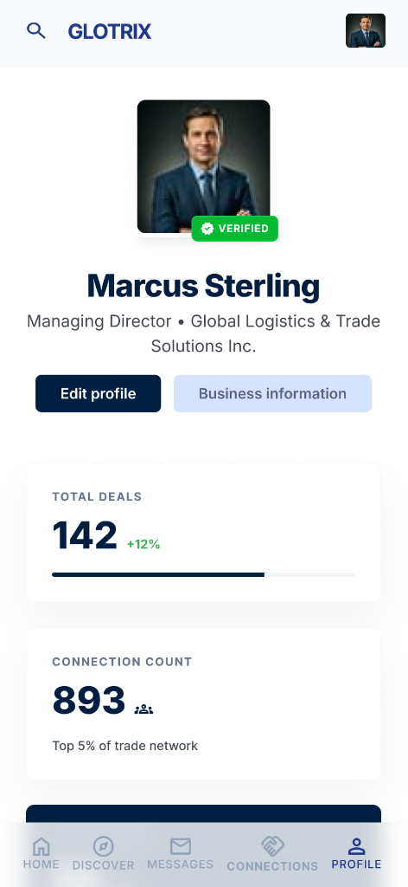

A chat-first mobile platform that simplifies global trade — connecting importers and exporters through trusted, verified relationships.



Global trade is a multi-trillion dollar industry, yet the process of finding reliable partners, managing day-to-day communication, and establishing business trust remains fragmented, opaque, and frustratingly manual.
Glotrix is a mobile app concept designed to fix this. By combining a verified directory of importers and exporters, a chat-first communication model, and trust signals like business badges and structured company profiles — Glotrix aims to make international trade as accessible and intuitive as finding a contact on LinkedIn and messaging them on WhatsApp.
Businesses trying to expand internationally face three core pain points that existing platforms fail to solve together:
Finding a legitimate importer or exporter in a foreign market requires navigating trade shows, referral chains, or expensive B2B marketplaces with limited transparency. There's no simple, searchable, mobile-first directory built for this.
Once a potential partner is found, communication is scattered across emails, WhatsApp, and WeChat — none of which are purpose-built for trade context. Deals collapse because of simple miscommunication and lack of structured conversation.
In global trade, trust is everything. But verifying whether a company is legitimate — its history, capacity, legal standing — is extremely difficult without an established reputation system or verification layer.
Existing trade platforms (Alibaba, Global Trader) are desktop-centric, slow, and overwhelming. Modern business owners — especially SMEs — need a mobile-first experience that mirrors consumer app standards.
I conducted competitive analysis of existing platforms (Alibaba, Kompass, Global Trader) and synthesized user behavior patterns from trade industry reports. The focus was on identifying where existing solutions fail SME importers and exporters.
28 · Chennai — Small Business Owner (Electronics)
Arjun needs to find reliable overseas suppliers but is overwhelmed by current interfaces and has been burned by unverified sellers. He often has to switch between 3 apps to complete a single deal.
35 · Coimbatore — Textile Manufacturer (Exp + Imp)
Priya manages both buying and selling but find platforms treat her as only one or the other. She spends hours filtering irrelevant inquiries and needs a way to track all trade conversations in one place.
I followed a streamlined design thinking process, moving from problem clarity → research → architecture → wireframes → high-fidelity UI.
Define
Research
Ideate
Wireframe
High-Fi UI
Prototype
Search and filter verified importers/exporters by country, category, and verified status. No middlemen.
Every interaction starts with a direct chat — no complex RFQ forms. Just start talking, build context, then transact.
Businesses earn verification badges through document submission — giving buyers and sellers instant trust signals.
Every profile includes capacity, categories, trade history highlights, and a public review score — all in one clean view.
Designed for cross-border use with multi-language support and region-specific trade category taxonomies.
Every screen designed for mobile-first use — fast, thumb-friendly, and optimized for low-bandwidth connections.
Every meaningful design project has moments where the "right" answer isn't obvious. Here are the key trade-offs I navigated:
The tension: Should the home screen lead with a product/company discovery feed (like Alibaba) or a conversation inbox (like WhatsApp)?
Decision: Chat-first. Research showed that SME users distrust impersonal marketplace UX. Leading with chat humanizes the platform and aligns with how trade relationships actually begin — through conversations, not catalogs.
The tension: A thorough verification process builds trust but risks drop-off during onboarding.
Decision: I implemented a progressive verification model — users can access basic features immediately, with verification prompts appearing only at natural trust-building moments (e.g., when trying to contact a supplier). This reduced perceived friction while maintaining the integrity of the trust system.
The tension: Trade profiles need a lot of data (capacity, categories, certifications, history) — but mobile screens are small.
Decision: I designed a tabbed profile structure with a clear visual hierarchy: the trust score and verification status are immediately visible, then secondary details are revealed on interaction. Key info, not all info.
The tension: Global trade users span wildly different cultural contexts, literacy levels, and device qualities.
Decision: Used universally understood iconography, avoided text-heavy onboarding, and ensured all critical actions were accessible with a single thumb tap on a standard Android screen size.
RESPONSE EFFICIENCY
Reduced the time from initial inquiry to freight quote through automated AI templates in chat.
USER TRUST RATING
Based on testing data where users prioritized 'Verified Partners' over unverified ones.
FASTER ONBOARDING
Simplified the business registration process from 15 minutes down to just 5 minutes.